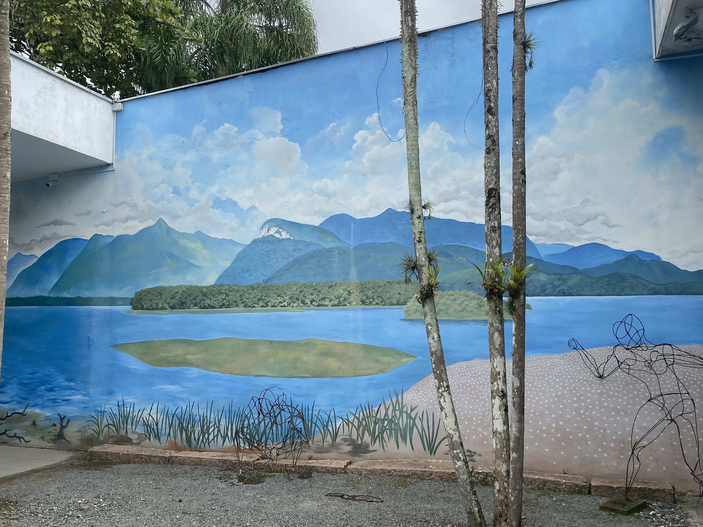
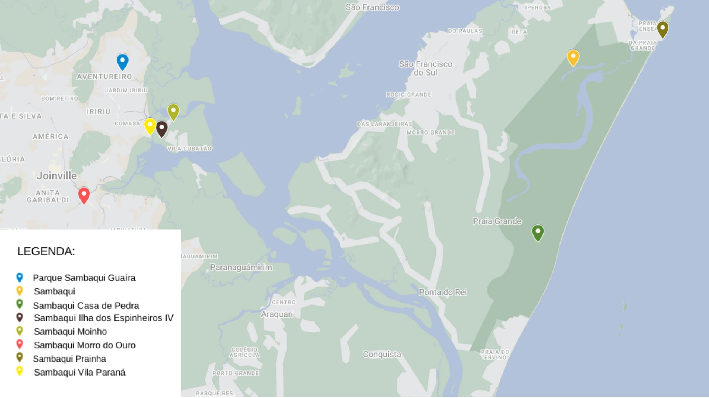
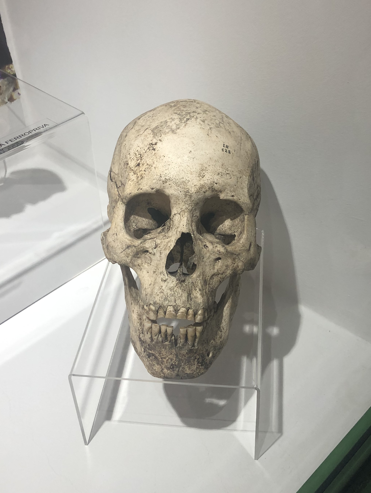
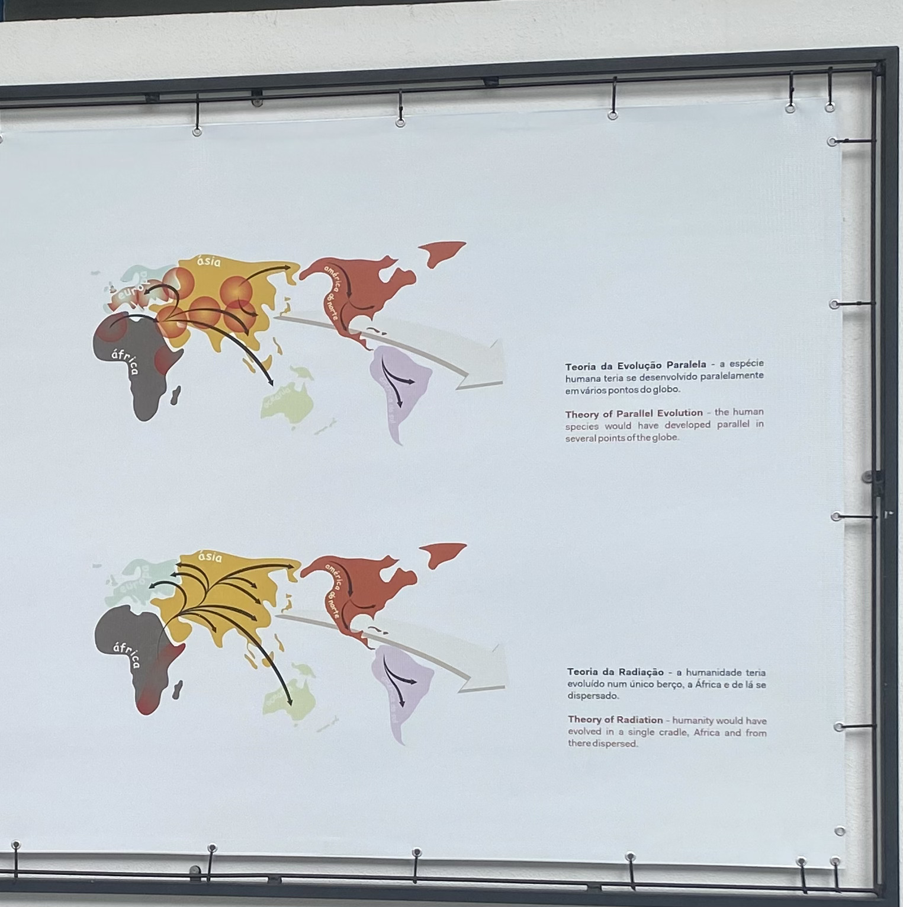
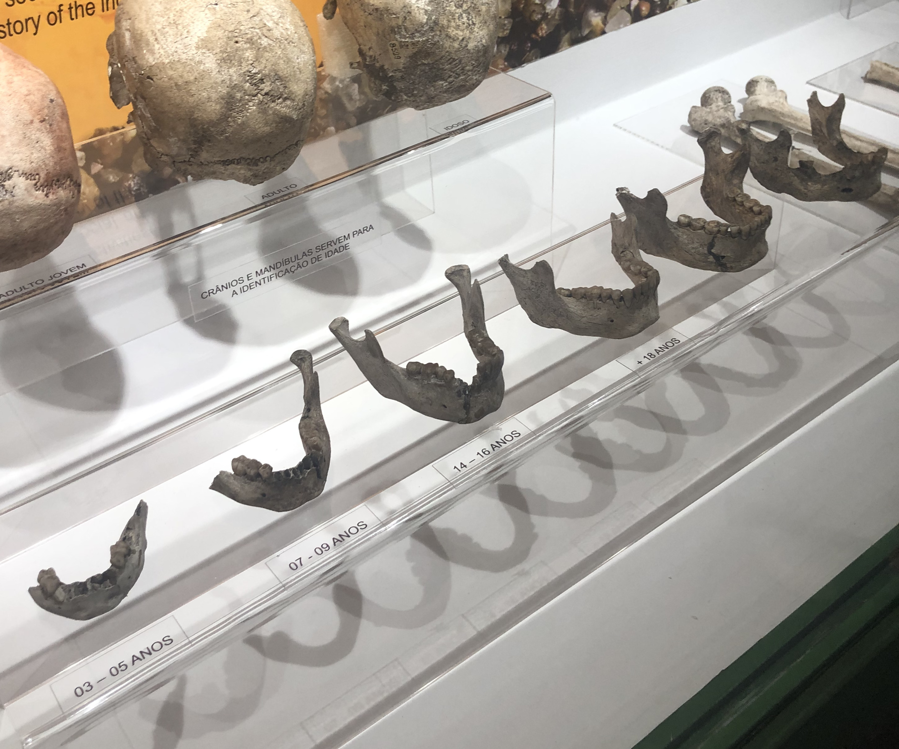
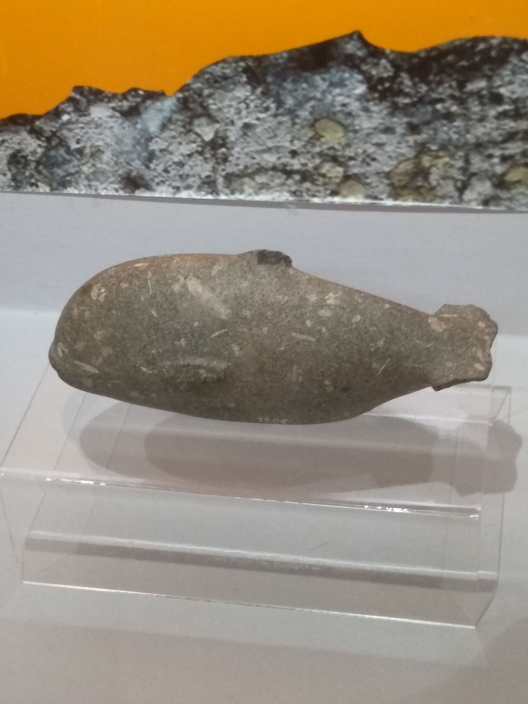
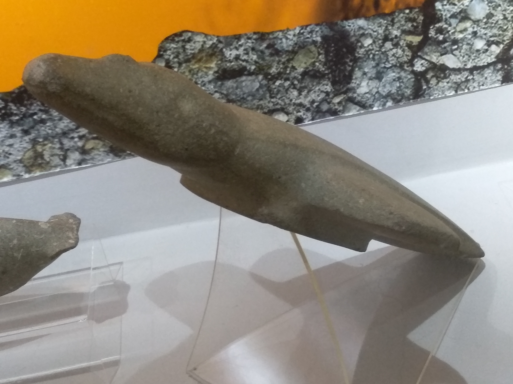
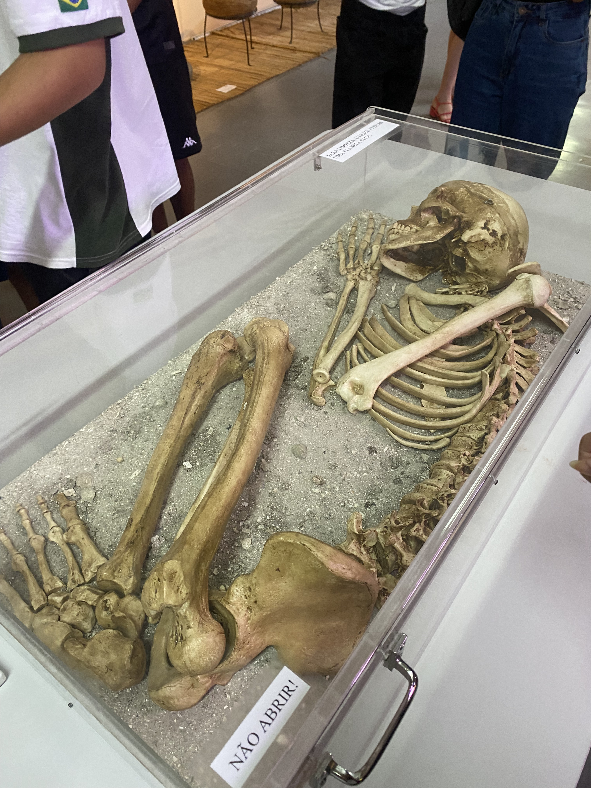
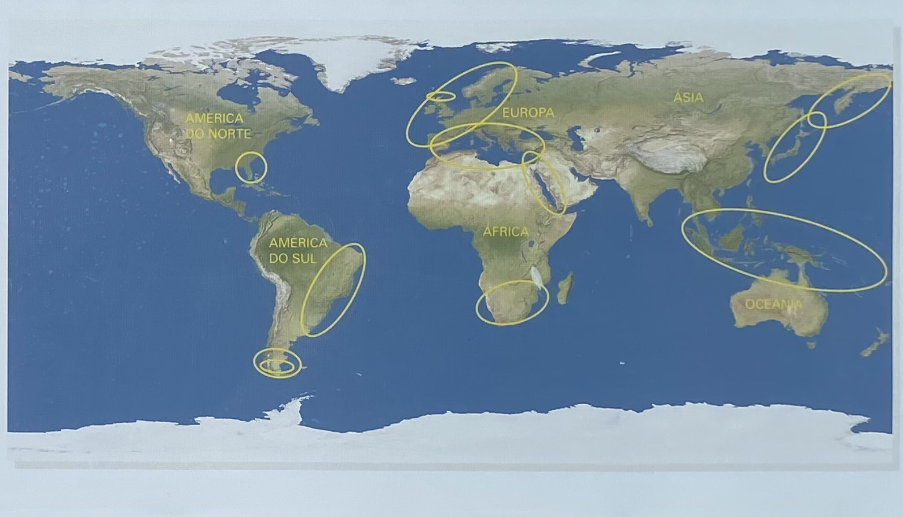
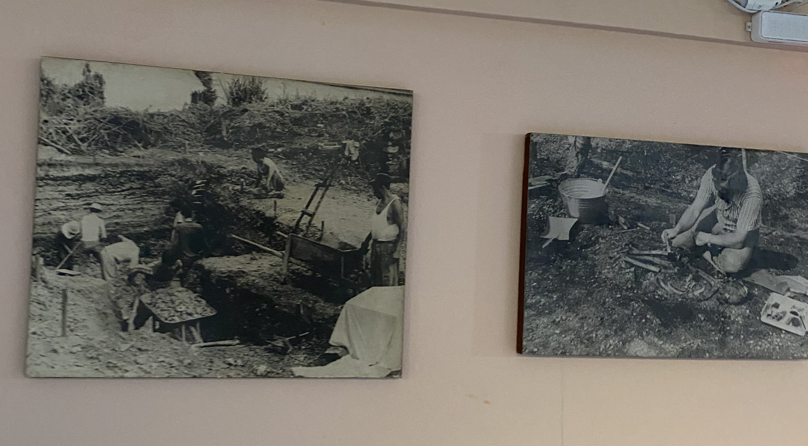

1 Sambaqui
1.1 “O QUE É UM SAMBAQUI?”
Os sambaquis, também conhecidos como concheiras ou berbigueiros, são construções feitas por povos que viviam na costa brasileira de 7 a 8 mil anos atrás. São definidos por uma elevação de forma arredondada e em algumas regiões do Brasil chegam a ter mais de 30 metros de altura. O principal material utilizado nessas construções eram as conchas de moluscos, além de outros materiais orgânicos como ossos de peixes, pássaros e mamíferos. Foram encontrados artefatos de pedra e osso, marcas de fogueira e de estacas compondo assim camadas. Essas camadas eram intercaladas e compostas por matéria orgânica, com várias estruturas distribuídas e lugares específicos. Entre essas estruturas a mais importante é o sepultamento, eles eram feitos em locais específicos e normalmente eram acompanhados por artefatos, fogueiras e oferendas alimentares (BELEM, 2012).
Figura 1- Ilustração de um sambaqui feita em uma parede do museu arqueológico
1.2 LOCALIZAÇÃO DOS SAMBAQUIS EM NOSSA REGIÃO
Os sambaquis encontrados em nossa região, em grande parte, estão localizados próximos à Baía da Babitonga. Essa proximidade ao mar e a rios é uma das principais características dos sambaquis. Tanto que no Brasil esses montes de conchas são encontrados sobretudo em regiões litorâneas. Para demonstrar esse fato temos abaixo um mapa com locais onde se encontram sambaquis em nossa região.
Figura 2 - Mapa com os locais onde se encontram sambaquis
1.3 O POVO QUE VIVIA NO SAMBAQUI ERA DA ESPÉCIE HOMO SAPIENS? EXPLIQUE.
Sim, eles eram da espécie Homo Sapiens. Segundo as informações explicadas pelo professor de história, Ivan Furmann, essa afirmação tem como base as diversas escavações de ossadas feitas por arqueólogos e o fato de que no continente americano só foram encontrados vestígios dessa espécie até hoje. De acordo com a guia do museu arqueológico de sambaqui de Joinville, outra prova de que o povo que vivia no Sambaqui era Homo Sapiens são as observações feitas sobre a forma de vida deles.
Figura 3 - Crânio de Homo Sapiens encontrado em um sambaqui
1.4 COMO ESSE POVO CHEGOU ATÉ A AMÉRICA? QUANDO HABITARAM A REGIÃO DA BAÍA DA BABITONGA?
Segundo o professor de história Ivan Furmann, existem diversas teorias de como o homem chegou à América, sendo três delas a transatlântica, a transpacífica e a do estreito de Bering.
A teoria transatlântica, com base nas informações ditas durante a aula de história, é a hipótese de que os primeiros seres humanos teriam chegado na América pela navegação no oceano Atlântico. Essa teoria explica que os Homo Sapiens teriam vindo da África para a América viajando em pequenos barcos pelo Atlântico. Essa teoria é pouco aceita pelos estudiosos, considerando que as condições de navegação da época não eram favoráveis, o que tornaria a viagem muito perigosa. Outro fato que descredibiliza essa hipótese é que os povos do oeste africano não tinham o costume de navegar em sua cultura, assim não teriam como atravessar um oceano.
A teoria do Estreito de Bering é uma das teorias mais aceitas pelos pesquisadores. Essa teoria, com base nas informações ditas pelo professor Ivan Furmann, afirma que os primeiros habitantes da América vieram da Ásia, atravessando o Estreito de Bering por uma ponte de terra que se formou durante a última era glacial, há cerca de 12.000 anos. Um ponto importante a ser apontado é que a base dessa teoria é hipótese que há 12.000 anos a terra teria passado por um processo de resfriamento e somente assim foi possível a migração da ásia para américa pelo estreito de Bering.
Por último, a teoria transpacífica diz respeito à hipótese que afirma que os primeiros seres humanos teriam chegado à América através de navegações pelo pacifico. Segundo as noções na aula de história explicadas, os Homo Sapiens teriam saído da Oceania e atravessado em pequenos barcos o oceano pacifico, passando de ilha em ilha. Essa teoria apresenta os mesmos problemas da transatlântica, afinal é pouco provável que esses povos teriam atravessado um oceano inteiro em pequenos barcos.
Figura 4 - Caminhos da América
Sabemos agora as principais hipóteses da vinda do homem para a América, mas falando da nossa região, de acordo com a guia do museu arqueológico do sambaqui de Joinville, há indícios de que o povo que habitavam os sambaquis teriam chegado à região da Baía da Babitonga a cerca de 5000 anos. Sabemos disso porque o sambaqui guaíra, o mais antigo encontrado até agora, apresenta uma datação de pouco mais de 5000 anos. E o sambaqui mais recente foi construído a quase 1000 anos. Assim esse povo habitou a região da Baía da Babitonga de 5000 a 1000 anos atrás. O ápice da cultura dos sambaquis em nossa região se dá de 4000 a 3000 anos atrás, pelo fato de que uma grande quantidade de sambaquis apresentam essa datação.
1.5 QUAL ERA A PRINCIPAL FONTE DE ALIMENTAÇÃO DELES?COMO SE SABE ESSA INFORMAÇÃO?
É fundamental estudar a alimentação dos povos sambaquis porque ela pode revelar características dessa sociedade. Podemos identificar diversos tipos de moluscos acumulados nos sambaquis, mas apesar disso, o peixe é considerado a principal fonte de proteína desses povos (MUSEU DO SAMBAQUI DE JOINVILLE, 2023). Pesquisas em sambaquis foram por muitos anos predominantemente orientadas para o estudo de moluscos e sua importância na dieta desse povo. Porém, esqueletos encontrados em Santa Catarina foram analisados e, de acordo com os estudos zooarqueológicos, a quantidade de moluscos consumidos era pequena em relação à quantidade de peixes (ZOCCHE et al, 2014).
De acordo com o Museu do Sambaqui de Joinville, um estudo foi realizado com base em esqueletos encontrados no Norte de Santa Catarina, a pesquisa descobriu indícios de que os carboidratos de origem vegetal faziam parte da dieta dos povos sambaquis. Pinhão, cará, batata doce e frutas de palmeiras são exemplos de alimentos provavelmente ingeridos por eles. As cáries comumente encontradas nos dentes dos esqueletos, possivelmente surgiram devido ao alto consumo de carboidratos.
Figura 5 - Arcadas dentárias encontradas em sambaquis
1.6 O QUE É UM ZOÓLITO?
Os zoólitos são esculturas em pedra que apresentam características de volumetria, simetria e representação naturalista que por sua perfeição técnica impressionam. Em geral, essas esculturas retratam formas zoomórficas, são perfeitamente polidas e na maioria das vezes apresentam uma cavidade ventral. Há indícios de uso específico nas cavidades devido a presença de pigmentos em algumas delas e deterioração de uso (BELEM, 2012). Segundo a guia do museu do Sambaqui de Joinville, acredita-se que essas esculturas poderiam ser usadas para triturar objetos, além de outras coisas. Exemplos de zoólitos:
Figura 6 - Exemplo de um zoólito que representa uma baleia
Figura 7- Exemplo de zoólito
1.7 TODO SAMBAQUI CONTÉM SEPULTAMENTOS? EXPLIQUE.
Segundo a guia do museu arqueológico do sambaqui de Joinville, a maioria dos sambaquis contém sepultamentos, porém já foram encontrados sambaquis que não apresentam essa característica. Assim, essa não seria a principal forma de uso dos montes de conchas. Em Santa Catarina estima-se que mais de 80% dos sambaquis possuam sepultamentos. Ainda segundo o museu, os sepultamentos não são sempre iguais, mas todas as pessoas dessa cultura eram sepultadas de lado em posição fetal e grande parte delas eram adornadas com contas de colar. Dados indicam a existência de áreas com concentração de sepultamentos e outras com presença de fogueiras e a estratigrafia indica uma sequência complexa de camadas com predominância de pequenos morros associados aos enterramentos. Há também sepultamentos encontrados que envolvem duas pessoas, chamadas de sepultamentos duplos. Uma curiosidade interessante que foi dita durante a visita ao museu, foi que alguns dos sepultamentos encontrados possuem ossos com uma coloração avermelhada, em decorrência da pintura com ocre, fato que leva a criação de hipóteses acerca das práticas funerárias dos povos do sambaqui.
Figura 8 - Sepultamento em posição fetal encontrado em um sambaqui
1.8 EXISTEM OUTRAS PARTES DO BRASIL E DO MUNDO QUE CONTENHAM CONSTRUÇÕES HUMANAS PARECIDAS COM AS DOS SAMBAQUIS DA REGIÃO DA BAÍA DA BABITONGA?
Sim, existem. No Brasil foram encontrados sambaquis por toda costa brasileira, desde o Rio Grande do Sul até a Bahia, diminuindo consideravelmente em número no litoral do nordeste, voltando a aparecer no litoral do Maranhão e do Pará. Pela datação encontrada os povos que construíram os sambaquis se instalaram na faixa litorânea brasileira há mais de 7.000 anos (BELÉM, 2012). De acordo com o que foi dito na visita ao museu arqueológico, a ocupação da costa brasileira se deu por grupos pescadores, caçadores, coletores, construtores de montes de conchas que guardam indícios de atividades cotidianas, além de seus restos mortais.
Em outras partes do mundo também há a ocorrência de sambaquis, porém eles não levam esse nome, visto que é um nome de origem tupi. Mas em todas as línguas os termos usados se referem a montes de conchas, como shell-mound (em inglês) e kaizuka (em japonês). Como dito neste parágrafo os sambaquis não estão restritos ao Brasil, eles são relativamente comuns no mundo inteiro e já foram identificados em quase todos os continentes (DE ALMEIDA, 2011). O mapa abaixo, feito pelo museu arqueológico de sambaqui de Joinville, representa as regiões onde foram encontrados amontoados de conchas no mundo.
Figura 9 - Mapa das regiões no mundo onde se encontram sambaquis
1.9 TODOS OS SAMBAQUIS ENCONTRADOS ESTÃO INTACTOS OU ALGUNS JÁ FORAM DESTRUÍDOS? COMO ISSO ACONTECEU?
Muitos dos sambaquis encontrados já foram destruídos, existem poucos intactos. Segundo a guia do museu arqueológico do sambaqui de Joinville, isso ocorre pelo fato de que até o século XX não existia nenhuma lei para a proteção e conservação dos sambaquis, muitos deles foram destruídos para construção de estradas e outros em decorrência de estudos arqueológicos, pelo fato de que na época não existiam ferramentas adequadas para a escavação. A destruição dos sambaquis também é causada por fatores ambientais que atuam sobre eles no decorrer do tempo.
Uma atividade que foi muito importante para a destruição desses sítios arqueológicos foi a extração de suas conchas para fabricação de cal, utilizado em implementos agrícolas, ração de animais, construção civil, entre outros. Além do mais, o avanço das malhas urbanas, muitas vezes efetuado de maneira acelerada e o considerável aumento ocupacional da região litorânea vem causando um grande impacto na conservação dos sambaquis ( ASSUNÇÃO, 2010).
Figura 10 - Quadros que mostram o processo de estudos arqueológico
1.10 QUAL A IMPORTÂNCIA DE PRESERVAR OS SAMBAQUIS?
Na arqueologia, o estudo dos sambaquis é de extrema importância, visto que eles indicam muito sobre a origem, a cultura e a forma que os povos sambaquis relacionavam-se com o ambiente. Já na visão da paleontologia, os sambaquis também contribuem nos estudos, porque ao observar os organismos e sedimentos antigos é possível entender sobre o ambiente, a biodiversidade e a biogeografia do passado. Também temos a Paleobiologia da Conservação, os estudos dela contribuem para a conservação dos sambaquis durante mais tempo (ASSUMPÇÃO e RITTER, 2022).
Quando os sambaquis não são preservados corretamente, os recursos para as pesquisas diminuem, prejudicando as novas descobertas que são reveladoras de diversas informações sobre o passado da região.
Nas cidades, é comum a existência de construções em locais que ainda conservam sambaquis no solo, porém isso não deveria ocorrer, já que sambaquis são objetos de estudo. De acordo com Assumpção e Ritter (2022), para acabar com situações assim a conscientização da população é necessária, para isso é essencial o investimento em turismo, em programas de conservação, e em pesquisas.
As leis contra a exploração dos sambaquis são importantes, a seguir há um exemplo de lei que promove a conservação deles:
São proibidos em todo território nacional o aproveitamento econômico, a destruição ou mutilação, para qualquer fim, das jazidas arqueológicas ou pré-históricas conhecidas como sambaquis, casqueiros, concheiros, birbigueiras ou sernambis, e bem assim dos sítios, inscrições e objetos (BRASIL, 1961, p. 1).
Figura 11 - Sambaqui de Garopaba do Sul

REFERÊNCIAS
ASSUMPÇÃO, A.C.; RITTER, M. Pesquisadores do passado: a importância da preservação dos sambaquis. Jornal da universidade, 2022. Disponível em: https://www.ufrgs.br/jornal/pesquisadores-do-passado-a- importancia-da-preservacao-dos-sambaquis/#:~:text=%C3%89%20ineg%C3%A1 vel%20a%20import%C3%A2ncia%20dos,rela%C3%A7%C3%A3o%20deles%20 com%20o%20ambiente. Acesso em: 30 abr. 2023.
ASSUNÇÃO, Danilo Chagas. Sambaquis da paleolaguna de Santa Marta: em busca do contexto regional no litoral sul de Santa Catarina2010. Tese de Doutorado. Universidade de São Paulo. Disponível em: https://www.teses.usp.br/teses/disponiveis/71/71131/tde-21062010-100432/en.php. Acesso em 30 abr.2023.
BELEM, Fabiana Rodrigues. Do seixo ao zoólito. A indústria lítica dos sambaquis do sul catarinense: aspectos formais, tecnológicos e funcionais. 2012. Tese de Doutorado. Universidade de São Paulo. Disponível em: https://www.teses.usp.br/teses/disponiveis/71/71131/tde-05062012-112145/en.php. Acesso em: 30 abr. 2023.
BRASIL. Lei nº 3.924 de 26 de Julho de 1961. Dispõe sobre os monumentos arqueológicos e pré-históricos. Brasília, DF: Diário Oficial da União, 1961.
DE ALMEIDA, José Ricardo et al. OS SIGNIFICADOS DOS SAMBAQUIS BRASILEIROS E O POTENCIAL ECOTURÍSTICO DOS SÍTIOS ARQUEOLÓGICOS DA PLANÍCIE COSTEIRA CANANÉIA-IGUAPE E ILHA COMPRIDA-SP (The meaning of brazilian middens and the eco-tourism potential of archeological sites on the...). ACTA GEOGRÁFICA, v. 5, n. 9, p. 117-133, 2011. Disponivel em: https://scholar.archive.org/work/wgztmp66sjbvhjyhqdqghjfgrq/access/wayback/https: //revista.ufrr.br/actageo/article/viewFile/326/419. Acesso em : 30 abr. 2023.
DEMATHÉ, Alexandro. Sambaqui de garopaba do su. 2010. 1 fotografia. 696x462 pixels. Disponível em: https://arqueologiaeprehistoria.com/2021/03/29/voce-sabe-o-que-e-um-sambaqui/#jp-carousel-12423. Acesso em: 30 abr. 2023.
FURMANN, Ivan. Exemplo de um zoólito que representa uma baleia. 2019. 1 fotografia. 300x146 pixels. Disponível em : https://drive.google.com/drive/folders/1LZQm3LQpjvMcA5zOFPhp7BWDxXL5zUCF?usp=sharing. Acesso em: 01 maio. 2023.
FURMANN, Ivan. Exemplo de zoólito . 2019. 1 fotografia. 508x339 pixels. Disponível em : https://drive.google.com/drive/folders/1LZQm3LQpjvMcA5zOFPhp7BWDxXL5zUCF?usp=sharing. Acesso em: 01 maio. 2023.
ZOCCHE, J.J. et al. Arqueofauna e paisagem. 1. ed. Erechim, RS: Habilis, 2014. Disponível em: https://www.researchgate.net/publication/329151045_Arqueofauna_e_Paisagem. Acesso em: 30 abr. 2023.